L8 // Общие линейные модели. Простая и множественная линейная регрессия
Что будет?
- Зачем нужна линейная регрессия
- Модель простой линейной регрессии
- Идентификация модели
- Тестирование статистических гипотез
- Модели множественной линейной регресии
L8.1 // Простая линейная регрессия
Ограничения корреляционного анализа
- позволяет оценить силу и направление линейной связи
- не позволяет предсказывать значения одной переменной на основе значений другой
Идея регрессионной модели

Уравнение прямой
\[ y = kx + b, \]
- \(k\) — угловой коэффициент (slope) \(b\) — свободный член (intercept)

Формализация модели
\[ y = b_0 + b_1 x \]
- переменная \(y\) называется зависимая, предсказываемая, целевая переменная или регрессант
- переменная \(x\) носит названия независимая переменная, предиктор или регрессор
- числа \(b_0\) и \(b_1\) называются коэффициентами или параметрами модели
Параметры модели и парамеры генеральной совокупности
\[ y = \beta_0 + \beta_1x, \]
\(\beta_0\) и \(\beta_1\) — параметры генеральной совокупности.
\[ y_i = \beta_0 + \beta_1 x + \varepsilon_i, \]
\(\varepsilon_i\) — случайная изменчивость целевой переменной.
\[ y_i = b_0 + b_1 x_i + e_i, \]
\(b_0 = \hat \beta_0\) и \(b_1 = \hat \beta_1\) — оценки параметров генеральной совокупности, \(e_i\) — ошибки (или остатки, residuals) модели.
Идентификация модели
\[ y_i = b_0 + b_1 x_i + e_i, \]
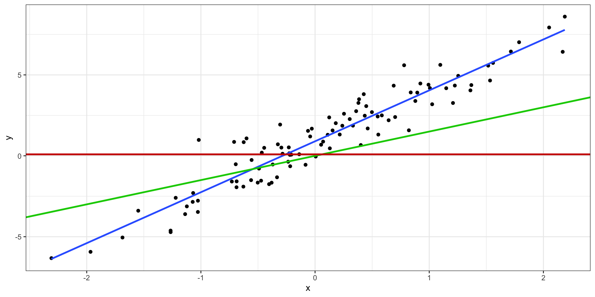Уравнение модели
\[ \hat y_i = b_0 + b_1 x_i, \]
\(\hat y_i\) — модельное значение целевой переменной
Ошибки модели
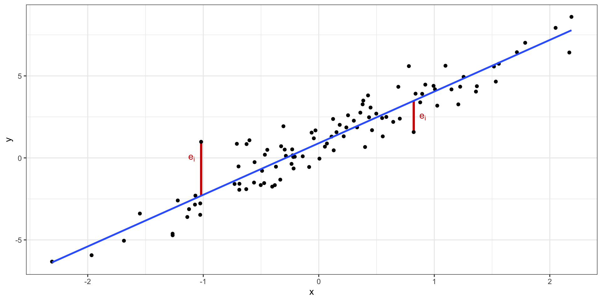Минимизация ошибки модели
\[ Q_{\text{res}} = \sum_{i=1}^n e_i^2 \to \min_{b_0, b_1} \]
\[ Q_{\text{res}} = \sum_{i=1}^n e_i^2 = \sum_{i=1}^n (y_i - \hat y_i)^2 = \sum_{i=1}^n \big( y_i - (b_0 + b_1 x_i) \big)^2 \]
\[ Q_{\text{res}} = f(b_0, b_1) = \sum (y_i - \hat y_i)^2 = \sum (y_i - b_0 - b_1x_i)^2 \to \min_{b_0, b_1} \]
Метод наименьших квадратов
\[ f(b_0, b_1) = \sum (y_i - b_0 - b_1x_i)^2 \]
\[ f(b_0, b_1) = \sum (y_i - b_0 - b_1x_i) (y_i - b_0 - b_1x_i) \]
\[ f(b_0, b_1) = \sum (y_i^2 - b_0 y_i - b_1 x_i y_i - b_0 y_i - b_1 x_i y_i + b_0 b_1 x_i + b_1^2 x_i^2 + b_0^2 + b_0 b_1 x_i) \]
\[ f(b_0, b_1) = \sum(y_i^2 - 2 b_1 x_i y_i - 2 y_i b_0 + x_i^2 b_1^2 + b_0^2 + 2 x_i b_1 b_0) \]
\[ \frac{f(b_0, b_1)}{\partial b_0} = \sum (-2y_i + 2b_0 + 2x_ib_1) = -2 \sum \big( y_i - (b_0 + b_1 x_i) \big) \]
\[ \frac{f(b_0, b_1)}{\partial b_1} = \sum (-2 x_i y_i + 2 x_i^2 b_1 + 2 x_i b_0) = -2 \sum \big( y_i - (b_0 + b_1 x_i) \big) x_i \]
\[ \cases { -2 \sum \big( y_i - (b_0 + b_1 x_i) \big) = 0 \\ -2 \sum \big( y_i - (b_0 + b_1 x_i) \big) x_i = 0 } \]
\[ \cases{ \sum \big( y_i - (b_0 + b_1 x_i) \big) = 0 \\ \sum \big( y_i - (b_0 + b_1 x_i) \big) x_i = 0 } \]
\[ \cases{ \sum y_i - \sum b_0 + \sum b_1 x_i = 0 \\ \sum y_i x_i - \sum b_0 x_i + \sum b_1 x^2_i = 0 } \]
\[ \cases{ \sum b_0 + \sum b_1 x_i = \sum y_i \\ \sum b_0 x_i + \sum b_1 x_i^2 = \sum y_i x_i } \]
\[ \cases{ b1 \sum x_i + n b_0 = \sum y_i \\ b1 \sum x^2_i + b_0 \sum x_i = \sum y_i x_i } \]
\[ b_0 = \frac{\sum y_i}{n} - b_1 \frac{\sum x_i}{n} = \bar y - b_1 \bar x \]
\[ b1 \sum x_i^2 + (\bar y - b_1 \bar x) \sum x_i = \sum x_i y_i \]
\[ \underline{b_1 \sum x_i^2} + \bar y \sum x_i - \underline{b_1 \bar x \sum x_i} = \sum x_i y_i \]
\[ b_1 \Big( \sum x_i^2 - \bar x \sum x_i \Big) = \sum x_i y_i - \bar y \sum x_i \]
\[ b_1 = \frac{\sum x_i y_i - \bar y \sum x_i}{\sum x_i^2 - \bar x \sum x_i} = \frac{(\sum x_i y_i - \bar y \sum x_i) \times n}{(\sum x_i^2 - \bar x \sum x_i) \times n} \]
\[ b_1 = \frac{\overline{xy} - \bar x \cdot \bar y}{\overline{x^2} - \bar x^2} = \frac{\overline{xy} - \bar x \bar y}{s_X^2} \]
Формулы коэффициентов
\[ \cases{ b_0 = \bar y - b_1 \bar x \\ b_1 = \frac{\overline{xy} - \bar x \cdot \bar y}{\overline{x^2} - \bar x^2} = \frac{\overline{xy} - \bar x \bar y}{s_X^2} } \]
Матричное вычисление коэффициентов
\[ \cases{ b_0 + b_1 x_1 + e_1 = y_1 \\ b_0 + b_1 x_2 + e_2 = y_2 \\ \dots \\ b_0 + b_1 x_n + e_n = y_n \\ } \]
\[ \mathbf{X} \mathbf{b} + \mathbf{e} = \mathbf{y}, \]
\(\mathbf{y}\) — вектор нашей целевой переменной, \(\mathbf{X}\) — матрица предикторов, \(\mathbf{b}\) — вектор коэффициентов модели, \(\mathbf{e}\) — вектор ошибок (остатков) модели.
\[ \mathbf{X} = \pmatrix{1 & x_1 \\ 1 & x_2 \\ \vdots & \vdots \\ 1 & x_n} \]
\[ \mathbf{b} = (\mathbf{X}^\top\mathbf{X})^{-1} \mathbf{X}^\top\mathbf{y} \]
Общая изменчивость
Общая сумма квадратов (total sum of squares, TSS)
\[ \text{TSS} = \sum_{i=1}^n (\bar y - y_i)^2 \]
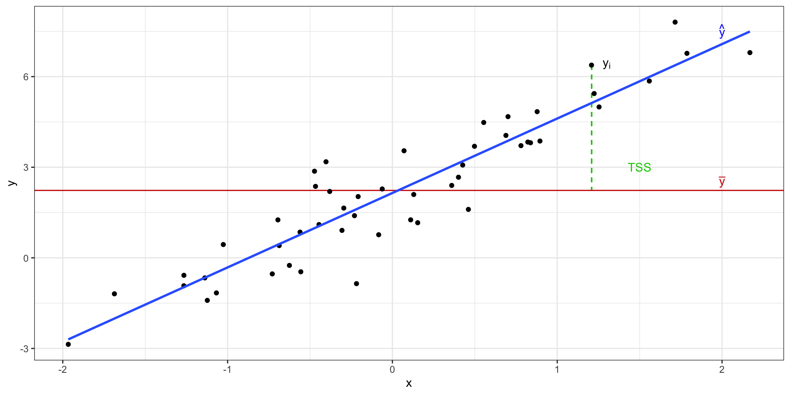Объясненная изменчивость
Объясненная сумма квадратов (explained sum of squares, ESS)
\[ \text{ESS} = \sum_{i=1}^n (\bar y - \hat y)^2 \]
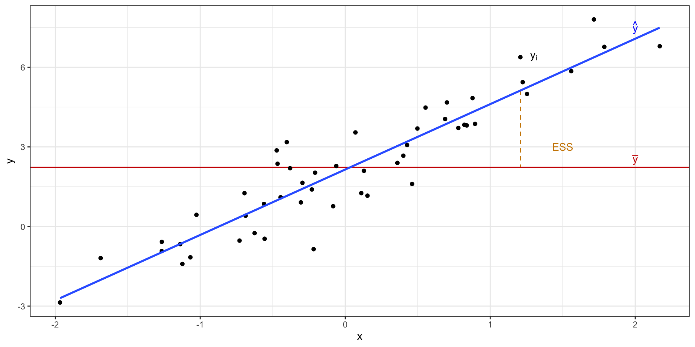Остаточная изменчивость
Необъяснённая (остаточная) сумма квадратов (residual sum of squares, RSS)
\[ \text{RSS} = \sum_{i=1}^n (y_i - \hat y_i)^2 \]
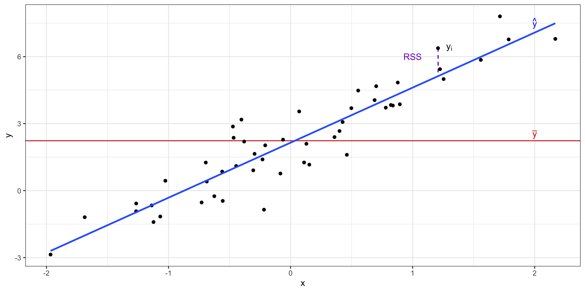Изменчивость данных с точки зрения регрессионнной модели
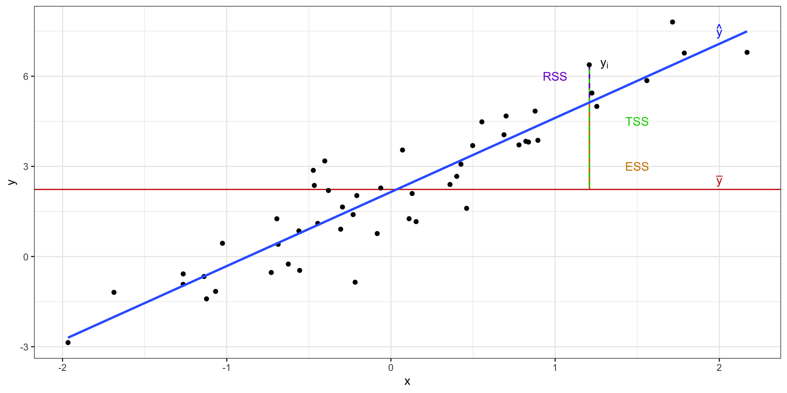\[ \text{TSS} = \text{ESS} + \text{RSS} \]
Коэффициент детерминации
\[ R^2 = \frac{\text{ESS}}{\text{TSS}} = 1 - \frac{\text{RSS}}{\text{TSS}} \]
\[ R^2 = r^2 \]
F-статистика
\[ \begin{split} H_0&: \beta_0 = \beta_1 = 0 \\ H_1&: \beta_0 \neq 0 \vee \beta_1 \neq 0 \end{split} \]
\[ F_{\text{df}_e, \text{df}_r} = \frac{\text{MS}_e}{\text{MS}_r} = \frac{\text{ESS}/\text{df}_e}{\text{RSS}/\text{df}_r} \overset{H_0}{\thicksim} F(\text{df}_e, \text{df}_r) \]
- \(\text{MS}_e\) — это «средний объясненный квадрат»,
- \(\text{MS}_r\) — «средний остаточный квадрат»,
- \(\text{df}_e = p - 1\) и \(\text{df}_r = n - p - 1\) — степени свободы для объясненной и остаточной изменчивости,
- \(p\) — количество предикторов в модели,
- \(n\) — число наблюдений.
F-распределение
F-распределение, распределение Фишера (\(\text{df}_e = 3\), \(\text{df}_e = 50\))
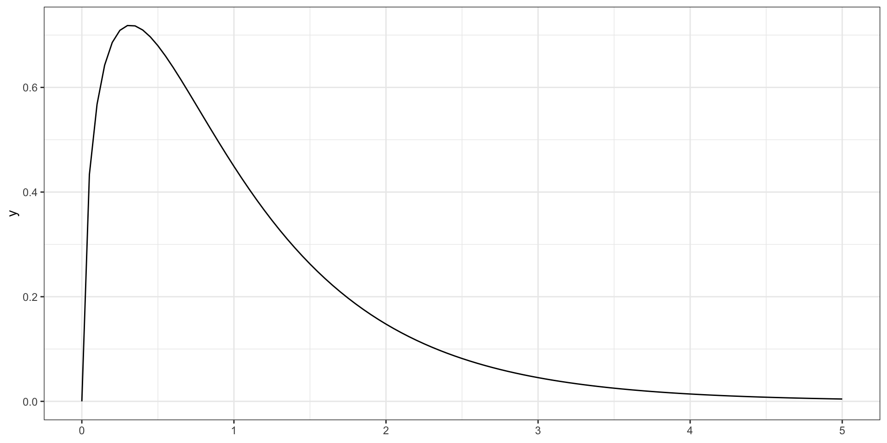Метрики качества модели
MSE
\[ \text{MSE} = \frac{1}{n} \sum_{i=1}^n \Big ( y_i - \hat y_i \Big)^2 \]
RMSE
\[ \text{RMSE} = \sqrt{\text{MSE}} = \sqrt{\frac{1}{n} \sum_{i=1}^n \Big ( y_i - \hat y_i \Big)^2} \]
MAE
\[ \text{MAE} = \frac{1}{n} \sum_{i=1}^n |y_i - \hat y_i| \]
MAPE
\[ \text{MAPE} = \frac{1}{n} \sum_{i=1}^n \Bigg |\frac{y_i - \hat y_i}{y_i} \Bigg| \]
Тестирование значимости предикторов
\[ \begin{split} H_0&: \beta_1 = 0 \\ H_1&: \beta_1 \neq 0 \end{split} \]
\[ t = \frac{b_1 - \beta_1}{\text{se}_{b_1}} = \frac{b_1}{\text{se}_{b_1}} \overset{H_0}{\thicksim} t(\text{df}_t), \]
\[ \text{df}_t = n-p-1 \]
\[ \text{se}_{b_1} = \frac{s_r}{\sum_{i=1}^n (x_i - \bar x)^2} \]
\[ s_r = \sqrt{\frac{\sum_{i=1}^n (y_i - \hat y_i)^2}{n-2}} \]
Допущения линейной регрессии
- связь между предикторами и зависимой переменной линейная
- остатки (ошибки) модели случайны
- среднее при любых значениях предиктора равно нулю: \(\bar \varepsilon_i = 0\),
- они не зависят друг от друга: \(\text{cor}\underset{i \neq j}{(\varepsilon_i, \varepsilon_j)} = 0\)
- остатки распределены нормально: \(\varepsilon \thicksim \mathcal N(0, \sigma^2_\varepsilon)\)
- дисперсия одинакова при любых значениях предиктора: \(\sigma^2_{\varepsilon_i} = \sigma^2_\varepsilon = \text{const}\)
Нормальное распределение остатков
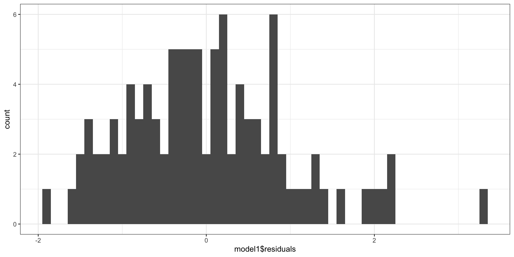
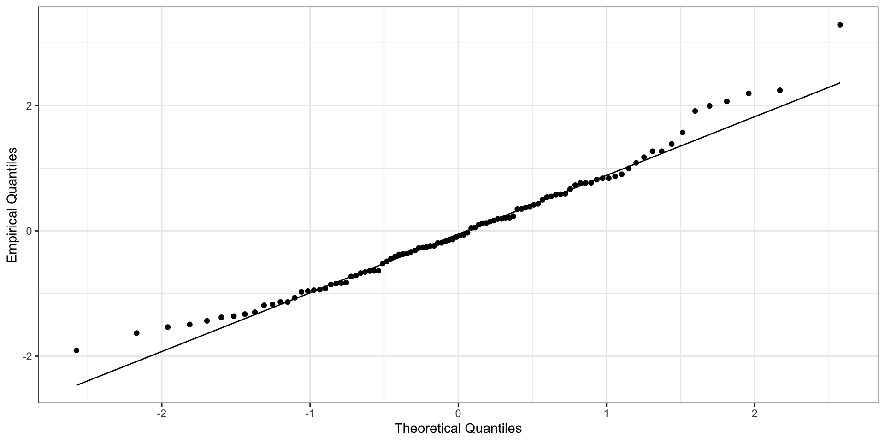
Независимость остатков от предсказанных значений
- среднее при любых значениях предиктора равно нулю: \(\bar \varepsilon_i = 0\)
- дисперсия одинакова при любых значениях предиктора: \(\sigma^2_{\varepsilon_i} = \sigma^2_\varepsilon = \text{const}\) — гомоскедастичность
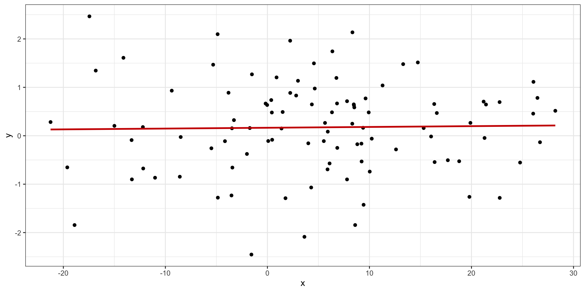
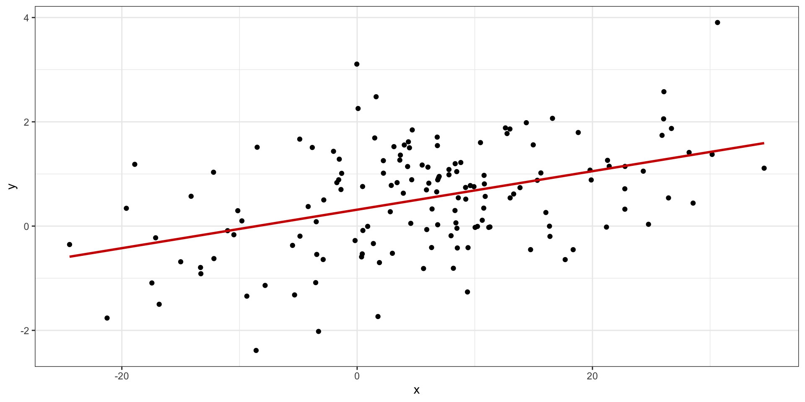
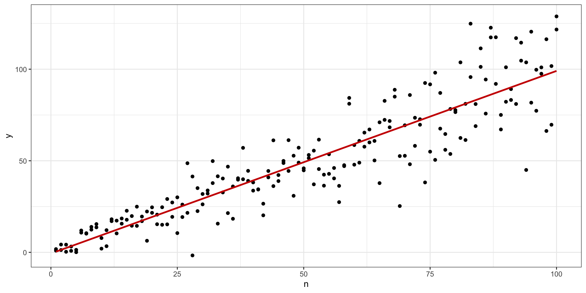
Влиятельные наблюдения
Красная точка — влиятельное наблюдение (influential point)
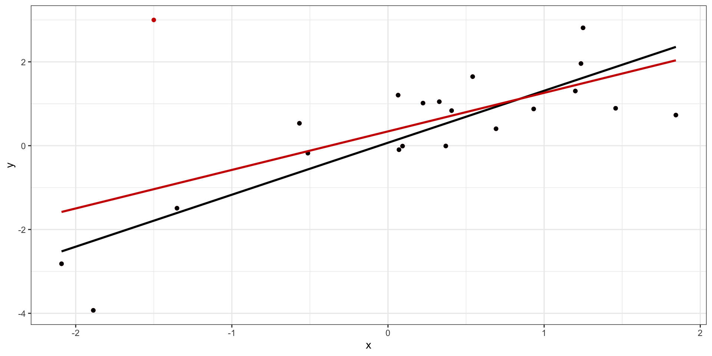
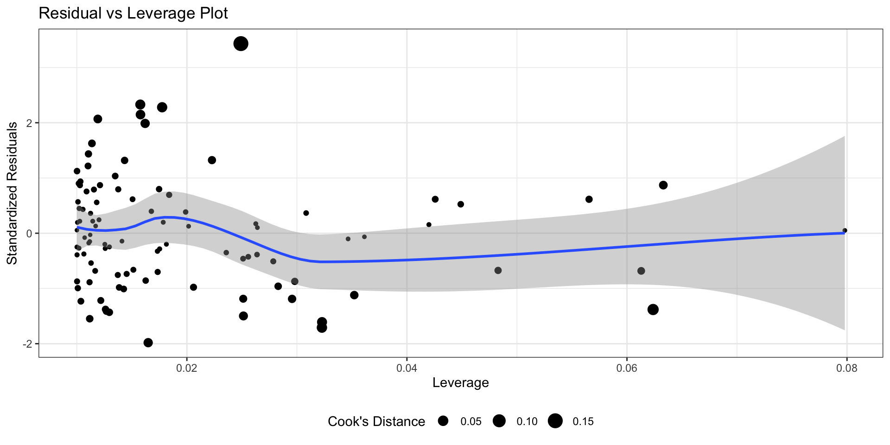
Предсказания на основе модели
- Интерполяция — предсказания значений целевой переменной внутри заданного диапазона значений предиктора.
- Экстраполяция — предсказания значений целевой переменной вне заданного диапазона значений предиктора.
L8.2 // Множественная линейная регрессия
Множественная линейная регрессия с количественными предикторами без взаимодействия
\[ y_i = b_0 + b_1 x_{i1} + b_2 x_{i2} + \ldots + b_p x_{ip} + e_i \]
\[ \mathbf{X} \mathbf{b} + \mathbf{e} = \mathbf{y} \]
\[ \mathbf{X} = \pmatrix{ 1 & x_{11} & x_{12} & \dots & x_{1p} \\ 1 & x_{21} & x_{22} & \dots & x_{2p} \\ \vdots & \vdots & \vdots & \ddots & \vdots \\ 1 & x_{n1} & x_{n2} & \dots & x_{np}} \]
\[ \mathbf{b} = \pmatrix{ b_0 & b_1 & b_2 & \dots & b_p} \]
\[ \mathbf{b} = (\mathbf{X}^\top\mathbf{X})^{-1} \mathbf{X}^\top\mathbf{y} \]
Проблема мультиколлинеарности
\[ \mathbf{b} = (\mathbf{X}^\top\mathbf{X})^{-1} \mathbf{X}^\top\mathbf{y} \]
Если наши предикторы сильно коррелируют друг с другом (≥ 0.8), то в нашей матрице возникают линейно зависимые столбцы, а значит обратная матрица не будет существовать.
Коэффициент вздутия дисперсии
Проверкой на мультиколлинеарность для модели является коэффициент вздутия дисперсии (variance inflation factor, VIF)
- пусть у нас есть модель
\[ y = b_0 + b_1 x_1 + b_2 x_2 + \ldots + b_p x_p + e \]
- построим линейную регрессию, в которой один из предикторов будет регрессироваться по всем другим:
\[ x_1 = \alpha_0 + \alpha_2 x_2 + \ldots + \alpha_m x_m + e \]
- вычислим коэффициент детерминации данной модели \(R^2_j\)
- для коэффициента \(b_j\) VIF будет определяться так:
\[ \text{VIF}_j = \frac{1}{1 - R^2_j} \]
Пороговым значением для вынесение вердикта о наличии мультиколлинеарности считается 3 (иногда 2).
Множественная линейная регрессия с количественными и категориальными предикторами без взаимодействия
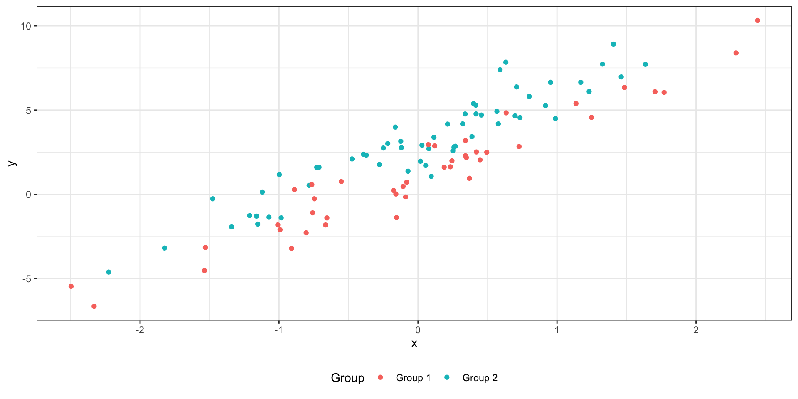
\[ y_i = b_0 + b_1 I_{i1} + b_2 x_{i2} + e_i \]
\(I\) — это индикаторная переменная:
- \(I_{i1} = 0\), если наблюдение под номером \(i\) принадлежит к группе
Group 1, - \(I_{i1} = 1\), если наблюдение под номером \(i\) принадлежит к группе
Group 2.
Две модели в одной:
Group 1(\(I_{i1} = 0\)): \(\hat y_i = b_0 + b_2 x_{i2}\)Group 2(\(I_{i1} = 1\)): \(\hat y_i = (b_0 + b_1) + b_2 x_{i2}\)
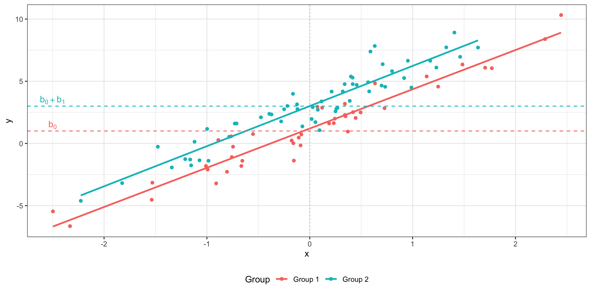
Множественная линейная регрессия с количественными и категориальными предикторами со взаимодействием
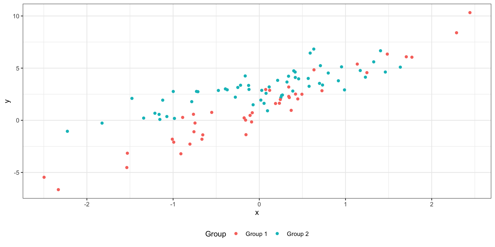
\[ y_i = b_0 + b_1 I_{i1} + b_2 x_{i2} + b_3 I_{i1} x_2 \]
\(I\) — индикатор:
- \(I_{i1} = 0\), если наблюдение под номером \(i\) принадлежит к группе
Group 1, - \(I_{i1} = 1\), если наблюдение под номером \(i\) принадлежит к группе
Group 2.
Две модели в одной:
Group 1(\(I_{i1} = 0\)): \(\hat y_i = b_0 + b_2 x_{i2}\)Group 2(\(I_{i1} = 1\)): \(\hat y_i = (b_0 + b_1) + (b_2 + b_3) x_{i2}\)
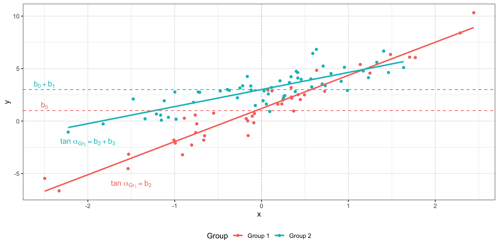
Множественная линейная регрессия со взаимодействием количественных предикторов
\[ y_i = b_0 + b_1 x_{i1} + b_2 x_{i2} + b_3 x_{i1}x_{i2} + e_i \]
если \(x_1 = 0\), то модель приобретает следующий вид: \(\hat y_i = b_2 x_{i2}\),
если \(x_2 = 0\), то такой вид: \(\hat y_i = b_1 x_{i1}\).
\(b_1\) и \(b_2\) показывают так называемые «условные» связи
\(b_3\) показывает сонаправленность связи предикторов с целевой переменной
Скорректированный коэффициент детерминации
\[ R^2_{\text{adj}} = 1 - (1 - R^2) \frac{n-1}{n-p} \]
Частный F-критерий
Пусть у нас есть две модели — (1) полная (full) и (2) сокращенная (reduced):
\[ \begin{split} (1) &: y_i = b_0 + b_1 x_1 + b_2 x_2 + b_3 x_3 + b_4 x_4 + e \\ (2) &: y_i = b_0 + b_1 x_1 + b_2 x_2 + e \end{split} \]
Различаются ли статистически данные модели?
\[ \begin{split} H_0 &: \beta_3 = \beta_4 = 0 \\ H_1 &: \beta_3 \neq 0 \vee \beta_4 \neq 0 \end{split} \]
\[ F = \frac{(\text{RSS}_\text{reduced} - \text{RSS}_\text{full})/k}{\text{RSS}_\text{full} / (n-p)}, \]
\(\text{RSS}_\text{reduced}\) — остаточная сумма квадратов сокращенной модели, \(\text{RSS}_\text{full}\) — остаточная сумма квадратов полной модели, \(n\) — количество наблюдений, \(p\) — количество предикторов полной модели, \(k\) — количество предикторов, исключенных из полной модели.
Итоги
- Модель простой линейной регрессии
- Метод наименьших квадратов
- Множественная линейная регрессия с количественными предикторами
- Множественная линейная регрессия с категориальными предикторами
- Взаимодействие предикторов
- Проблема мультиколлинеарности
L8 // Общие линейные модели. Простая и множественная линейная регрессия
Антон Ангельгардт

WLM 2023